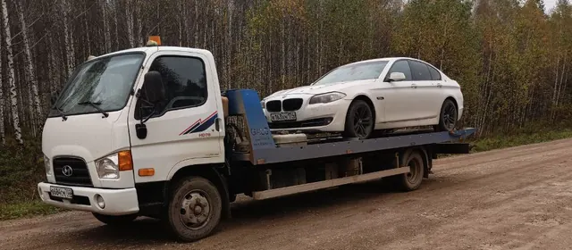

Эвакуатор 24/7
Караидель и районы · до 4 тонн
Позвонить
+7 (999) 741-47-55
Позвонить
Не знаете, где находитесь? Отправьте геолокацию — мы определим ваше место.
✓ Местоположение определено
Куда отправить вашу геолокацию?
Отправить в MAX Отправить в WhatsApp Отправить SMSДля MAX: скопируйте текст и вставьте его в чат.
WhatsApp и SMS откроются с готовым текстом — останется нажать «Отправить».
- До 4 тонн
- Караидель и районы
- Работаем круглосуточно
Работаем
- Караидельский район
- Мишкинский район
- Аскинский район
- Тастуба
- Трассы и населённые пункты поблизости
Сохранить номер
Контакт «Эвакуатор 24/7 — Караидель»: телефон и адрес.
с. Караидель, ул. Мира, 13/11 — проложить маршрут